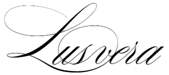
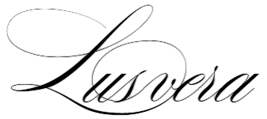

Maskas ļauj cilvēkiem paslēpt savu īsto identitāti, spēlēt dažādas lomas un uzvesties brīvāk, neatkarīgi no sociālā statusa vai morālajiem ierobežojumiem. Baroka laikmets, no kura tika ņemta iedvesma apģērbam, bija piepildīts ar dramatismu, paradoksiem un ilūziju spēlēm. Maskas simbolizēja pretrunu starp ārējo fasādi un iekšējo patiesību, uzsverot baroka mākslas tieksmi pēc teatralitātes un noslēpumainības.
Galvas rotā izliektie metāla stieņi un kristālu fragmenti paceļas kā baroka arhitektūras smalkie dekori, kas simbolizē gan radošo haosu, gan garīguma alkas. Tērpa apakšdaļā saplūst lauzti, sudraba spīdoši elementi ar mežģīnēm, veidojot dialogu starp aukstumu un maigumu. Tas mēģina saplūst robežas starp realitāti un izdomu.